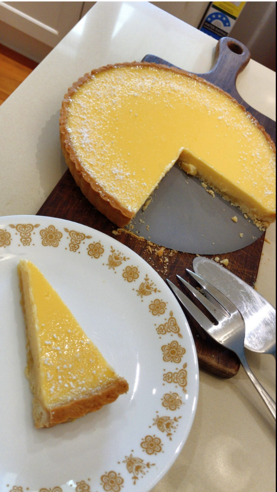

Submitted by: Nicholas Yeung
Background
I got this recipe from a magazine, Monocle. This has been my go-to whenever I have a couple hours to kill on a weekend and want to have something light, sweet, and refreshing. You’ll need a shallow tart tin (~27cm) for this.
Ingredients
Filling:
- 6 eggs
- 1 egg yolk
- 180g caster sugar
- 150ml lemon juice
- 125ml pouring cream (single cream)
- 50ml gin
Pastry:
- 260g plain flour
- 80g icing sugar
- Rind from 1 lemon, finely grated
- 160g chilled butter, diced
- ½ lightly beaten egg
Instructions
- Start with the filling: lightly whisky the eggs, yolk and sugar in a large bowl until just combined. Let the mixture stand for 30 mins, whisky occasionally until the sugar dissolves (don’t over-whisky!) Whisky in the remaining ingredients until just combined. Stand for 30 mins again and skim/pop any bubbles from the mixture’s surface.
- Meanwhile, make the pastry. Mix the flour, icing sugar, grated lemon rind and a pinch of salt in food processor to combine. Add the diced butter and mix until it looks like find crumbs, then add the beaten egg and 1 to 2 tbsps of iced water. Mix so that it just comes together. If you don’t have a food processor you can rub your fingers together to combine the butter with other ingredients. Remove the dough and form it into a disc. Warp it in cling film and refrigerate for 30 mins. Go watch some Netflix!
- Preheat the oven to 180C (fan-forced). Roll out the pastry on a lightly floured surface to ~3mm thick. Line the tart tin with the pastry, allowing excess to overhang. Refrigerate for another 30 mins then trim the excess pastry.
- Use a fork to poke some tiny holes on the pastry (otherwise it would puff up during baking). Place it on a baking tray and line the tart with greaseproof paper and baking weights (improvise if you don’t have any). Blind bake for ~15mins until the pastry is light golden and crisp. Remove the paper and weights, then return the tart to the oven and bake until golden brown for ~5-8mins.
- Reduce the oven to 140C. Slide the tart out from the oven halfway and pour in the lemon filling. Push it back into the oven and fill the case to the brim with the filling. Bake until the mixture is set around the edges with a wobble in the centre (20 to 25 mins). Cool to room temperature for ~2 hours then serve.